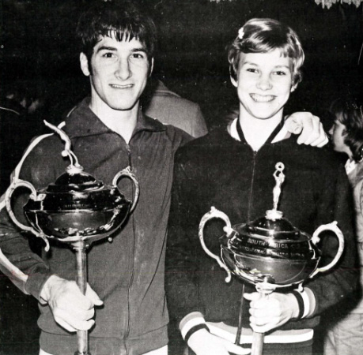

John Crosby (USA)

John Crosby and Debbie Fike, 1974 South African Cup Champions
1971 Pan American Games AA Silver Medalist
1974 Moscow News FX Gold Medalist
1974 USGF AA Champion
John was born on June 29, 1951 in New York. He began gymnastics at age 7, and at age 11 he won the FX title at the YMCA national championships (and appeared on the cover of International Gymnast magazine)!
He competed for Southern Connecticut State University and won medals in NCAA Division 1 and Division 2 championships. To cap off his collegiate gymnastics career,he won the Nissen Award in 1973. John was a US
national team member and competed at the Olympics, Pan American Games, and many international meets. He was a member of the US gymnastics team at the 1973 University Games, but was stricken with acute appendicitis
shortly after he arrived in Moscow (where a Russian female surgeon performed the operation). At the inaugural Moscow News International Tournament in 1974, John won the FX title. He died in October 2017.
Competition Results
1962
National Gymnastics Clinic Jr. Championships:
1st AA, 1st FX, 1st PH, 1st R, 1st V, 3rd PB, 2nd HB
1963
YMCA National Championships: 1st FX
1969
New York State High School Championships: 2nd AA, 2nd FX
1970
NCAA Championships: 4th FX, 4th V
New England College Championships: 1st Team, 2nd AA, 1st FX, 1st PB, 2nd PH, 2nd R, 2nd V, 3rd HB
US World Team Trials: 15th AA
1971
NCAA Championships: 8th AA, 2nd FX
NCAA College (Div. II) Championships: 6th Team, 1st AA, 1st FX, 2nd PH, 2nd V, 1st PB, 3rd HB
Pan American Games Trials: 1st AA
Pan American Games: 2nd Team, 2nd AA, 1st FX, 1st R, 2nd PH, 2nd V, 2nd PB, 2nd HB
Riga International: 11th AA, 1st FX
Winnipeg International: 12th AA
World Cup: 5th AA
1972
NCAA Championships: 8th AA, 2nd FX
NCAA College (Div. II) Championships: 2nd Team, 1st AA, 1st FX, 1st V, 2nd PB, 3rd R, 4th HB, 5th PH
Olympic Games: 10th Team
US Olympic Trials: 5th AA
USA-JPN Dual Meet: 2nd Team
1973
NCAA Championships: 5th AA, 1st V, 2nd FX
USA-HUN Dual Meet: 1st Team, 5th AA
1974
AAU Championships: 3rd AA, 1st FX, 1st V, 2nd HB
Moscow News: 8th AA, 1st FX
Riga International: 2nd FX
South African Cup: 1st AA
USGF Championships: 1st AA, 1st Fx, 1st V, 3rd PH
US World Team Trials: 3rd AA
1975
USA-FRG Dual Meet: 1st Team, 7th AA
This page was created on April 4, 2020.
© Gymn Forum